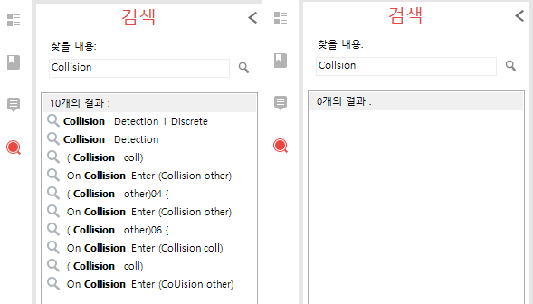

PDF뷰어 프로그램중 가장 기능이 많다. 그림으로 된 글자를 다시 텍스트로 변환하는 OCR기능도 지원하고, PDF병합, 추가, 텍스트 변경을 자유롭게 할 수 있다.
온라인 오픈북 시험에서의 꿀팁이라면, 강의의 모든 PDF를 병합하고, OCR로 텍스트 전환 후 오타를 수정해서 준비하라. 그 후 Ctrl + F키를 사용해서 검색하면, 그동안의 검색과 효율이 확연히 다를것이다.

같은 PDF내에서 OCR을 한것 (좌측)과 원본 병합(우측)의 검색결과 비교